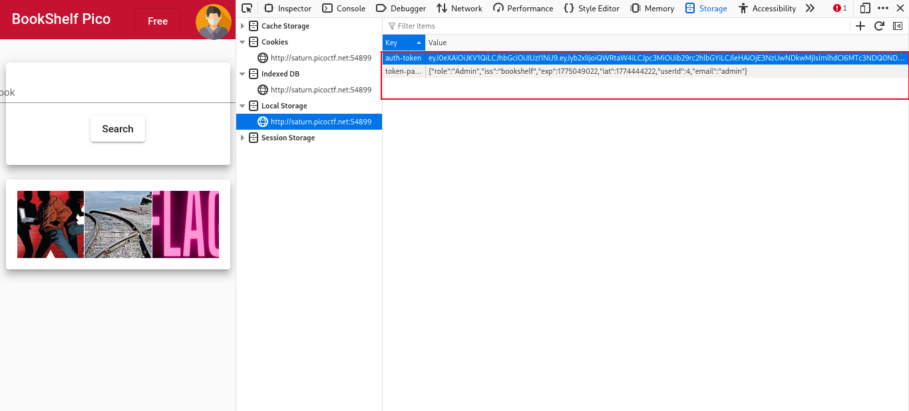
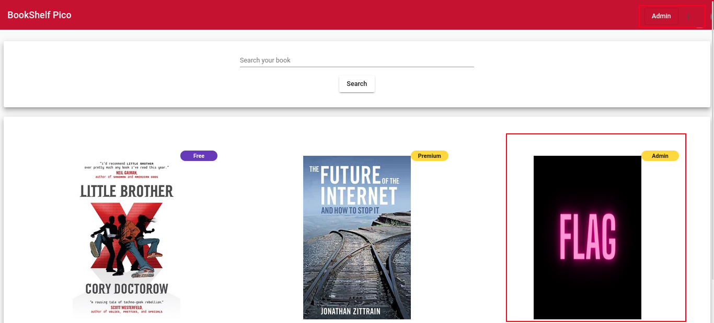
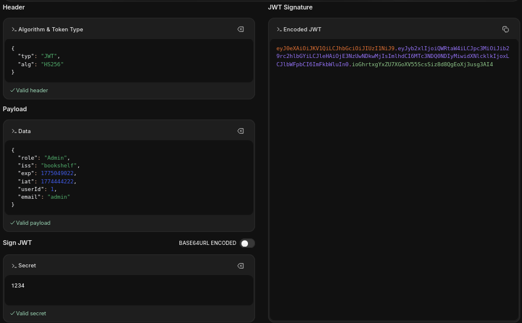
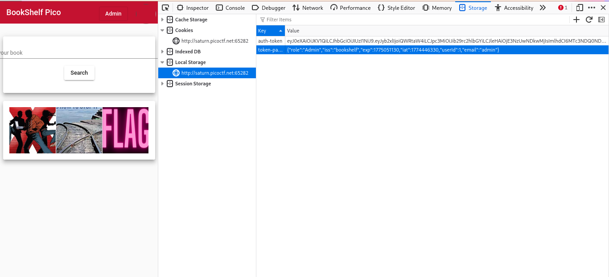
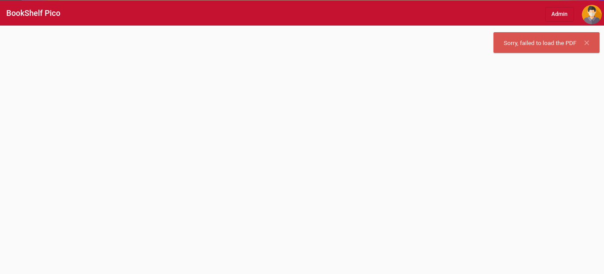
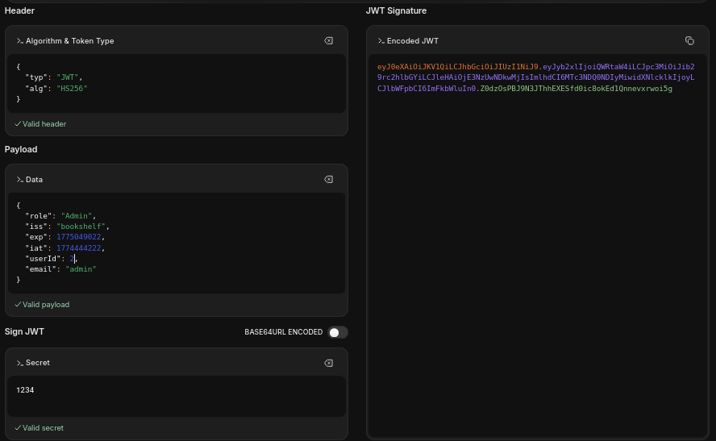
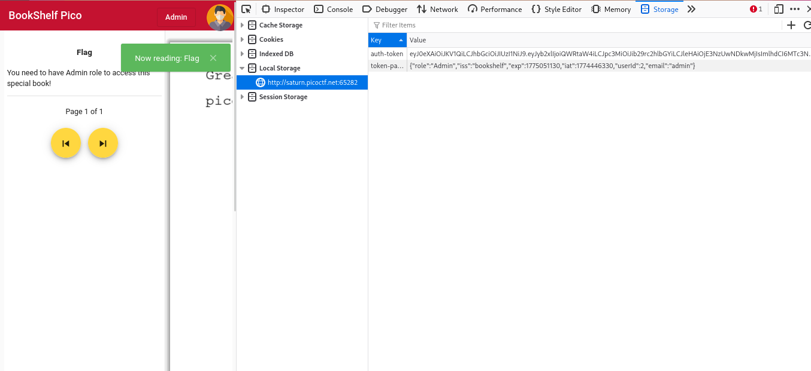

MISSION_LOG: Java_Code_Analysis!?!
0x01: Analysis
Diberikan sebuah lab bernama Java_Code_Analysis!?!, berdasarkan hasil observasi awal cara untuk menyelesaikan lab ini adalah dengan cara membaca buku bernama Flag. Lalu kita juga diberikan sebuah kredential untuk login dan source code web target.

0x02: Exploitation
Pada saat saya mengunjungi web target saya melihat fitur login dan saya
menggunakan kredensial yang sudah di berikan yaitu:
username: user
password: user
Setelah saya memasukkan kredensial di atas dan login saya diarahkah ke menu dashboard dan saya melihat ada buku bernama flag tapi sayangnya membutuhkan hak akses Admin sedangkan saya masih di level Free.


saya mencoba untuk menganalisis kode Java yang sudah di berikan dan pada saat saya membaca file UserService.java, saya menemukan kata kunci JWT yang kemungkinan ini berhubungan dengan token JWT.
Saya mencoba melihat localstorage pada web target benar saja saya menemukan sebuah token JWT.


Saya langsung menyalin token JWT yang saya temukan dan saya menggunakan jwt.io. Pada saat saya mendecode token JWT saya menemukan sebuah parameter role ada kemungkinan saya harus mengubah parameter ini. Hal lain yang saya temukan yaitu Secret yang kemungkinan ada pada kode Java.
Pada saat saya menganalisis kembali kode Java saya menemukan sebuah secret pada file SecretGenerator.java.


Pada saat saya menganalisis file lain saya menemukan hal menarik pada file data.sql yang berisi roles values.
Setelah saya mendapatkan secret dan roles saya menjadi tahu, saya mengubah parameter role, userId, email dan secret menjadi Admin karena dibutuhkan role Admin untuk membaca buku bernama flag.
Setelah itu saya menyalin token JWT baru dan saya ganti token JWT lama lalu saya refresh web target dan saya coba akses buku bernama flag.




Tapi sayangnya pada saat saya mengakses buku Flag terjadi error. Saya kembali menganalisis token JWT.
Lalu saya mencoba mengubah userId menjadi 1 dan saya lakukan hal yang sama yaitu mengganti token JWT lama dengan yang baru. Tapi sayangnya terjadi error kembali pada saat saya mengakses buku Flag.




Lalu saya mencoba mengubah userId menjadi 2 dan ternyata berhasil saya mendapatkan flag-nya.

